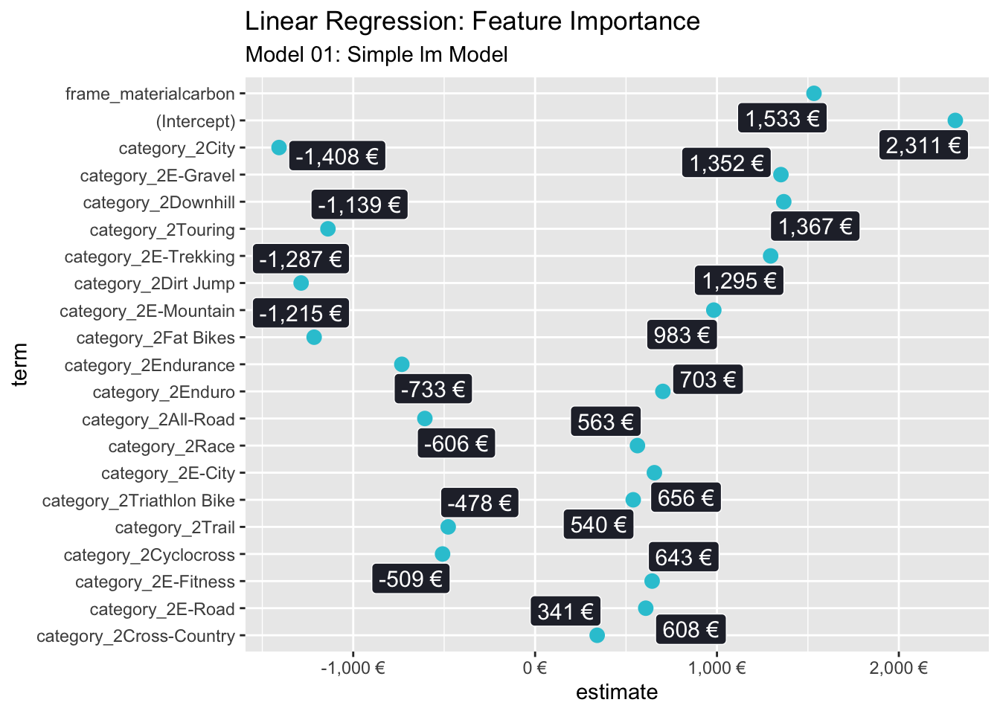

IMPORTANT: –
Last compiled: 2022-03-31
# CHALLENGE
library(tidyverse)
library(tidymodels)
# Modeling
library(parsnip)
# Preprocessing & Sampling
library(recipes)
library(rsample)
# Modeling Error Metrics
library(yardstick)
# Plotting Decision Trees
library(rpart.plot)
# Modeling ----------------------------------------------------------------
#bike_orderlines_tbl <- readRDS("~/bike_orderlines_tbl.rds")
bike_orderlines_tbl <- readRDS("Business Decisions with Machine Learning/bike_orderlines.rds")
glimpse(bike_orderlines_tbl)## Rows: 15,644
## Columns: 18
## $ order_id <dbl> 1, 1, 2, 2, 3, 3, 3, 3, 3, 4, 5, 5, 5, 5, 6, 6, 6, 6, 7…
## $ order_line <dbl> 1, 2, 1, 2, 1, 2, 3, 4, 5, 1, 1, 2, 3, 4, 1, 2, 3, 4, 1…
## $ order_date <dttm> 2015-01-07, 2015-01-07, 2015-01-10, 2015-01-10, 2015-0…
## $ model <chr> "Spectral CF 7 WMN", "Ultimate CF SLX Disc 8.0 ETAP", "…
## $ model_year <dbl> 2021, 2020, 2021, 2019, 2020, 2020, 2020, 2021, 2020, 2…
## $ category_1 <chr> "Mountain", "Road", "Mountain", "Road", "Mountain", "Hy…
## $ category_2 <chr> "Trail", "Race", "Trail", "Triathlon Bike", "Dirt Jump"…
## $ category_3 <chr> "Spectral", "Ultimate", "Neuron", "Speedmax", "Stitched…
## $ price <dbl> 3119, 5359, 2729, 1749, 1219, 1359, 2529, 1559, 3899, 6…
## $ quantity <dbl> 1, 1, 1, 1, 1, 1, 1, 1, 1, 1, 1, 2, 1, 1, 1, 1, 1, 1, 1…
## $ total_price <dbl> 3119, 5359, 2729, 1749, 1219, 1359, 2529, 1559, 3899, 6…
## $ frame_material <chr> "carbon", "carbon", "carbon", "carbon", "aluminium", "c…
## $ weight <dbl> 13.80, 7.44, 14.06, 8.80, 11.50, 8.80, 8.20, 8.85, 14.4…
## $ url <chr> "https://www.canyon.com/en-de/mountain-bikes/trail-bike…
## $ bikeshop <chr> "AlexandeRad", "AlexandeRad", "WITT-RAD", "WITT-RAD", "…
## $ location <chr> "Hamburg, Hamburg", "Hamburg, Hamburg", "Bremen, Bremen…
## $ lat <dbl> 53.57532, 53.57532, 53.07379, 53.07379, 48.78234, 48.78…
## $ lng <dbl> 10.015340, 10.015340, 8.826754, 8.826754, 9.180819, 9.1…model_sales_tbl <- bike_orderlines_tbl %>%
select(total_price, model, category_2, frame_material) %>%
group_by(model, category_2, frame_material) %>% #es wird gruppiert nach model, aber durch die anderen beiden Eintr?ge werden categroy and frame angezeigt als Spalten
summarise(total_sales = sum(total_price)) %>% # aggregierte Sales
ungroup() %>%
arrange(desc(total_sales))
# adding features
bike_features_tbl <- readRDS("Business Decisions with Machine Learning/bike_features_tbl.rds") %>%
select(-contains('Rotor')) #Removing column Break Rotor (although there is a space)
glimpse(bike_features_tbl)## Rows: 231
## Columns: 66
## $ bike_id <dbl> 2875, 2873, 2874, 2876, 2877, 2225, 2091, …
## $ model <chr> "Aeroad CF SL Disc 8.0 Di2", "Aeroad CF SL…
## $ model_year <dbl> 2020, 2020, 2020, 2020, 2020, 2019, 2019, …
## $ frame_material <chr> "carbon", "carbon", "carbon", "carbon", "c…
## $ weight <dbl> 7.60, 7.27, 7.10, 7.73, 7.83, 6.80, 6.80, …
## $ price <dbl> 4579, 6919, 6429, 5069, 3609, 6139, 5359, …
## $ category_1 <chr> "Road", "Road", "Road", "Road", "Road", "R…
## $ category_2 <chr> "Race", "Race", "Race", "Race", "Race", "R…
## $ category_3 <chr> "Aeroad", "Aeroad", "Aeroad", "Aeroad", "A…
## $ gender <chr> "unisex", "unisex", "unisex", "unisex", "u…
## $ url <chr> "https://www.canyon.com/en-de/road-bikes/r…
## $ Frame <chr> "Canyon Aeroad CF SL Disc", "Canyon Aeroad…
## $ Fork <chr> "Canyon FK0041 CF SLX Disc", "Canyon FK004…
## $ `Rear Derailleur` <chr> "Shimano Ultegra Di2 R8050 SS", "SRAM RED …
## $ `Front Derailleur` <chr> "Shimano Ultegra Di2 R8050", "SRAM RED eTa…
## $ Cassette <chr> "Shimano Ultegra R8000, 11-speed, 11-28T",…
## $ Crank <chr> "Shimano Ultegra R8000", "SRAM RED D1", "S…
## $ `Bottom bracket` <chr> "Shimano Pressfit BB72", "SRAM Pressfit RE…
## $ `Thru Axle` <chr> "Canyon Thru Axle", "Canyon Thru Axle", "C…
## $ Cockpit <chr> "Canyon H36 Aerocockpit CF", "Canyon H36 A…
## $ Saddle <chr> "Selle Italia SLR", "Selle Italia SLR", "S…
## $ Seatpost <chr> "Canyon S27 Aero VCLS CF", "Canyon S27 Aer…
## $ Pedals <chr> "None included", "None included", "None in…
## $ `Derailleur hanger` <chr> "Shop Derailleur Hanger GP0211-01", "Shop …
## $ Battery <chr> "", "SRAM eTap Powerpack", "", "SRAM eTap …
## $ Brake <chr> "", "", "", "", "", "", "", "", "", "", ""…
## $ `Shift Lever` <chr> "", "", "", "", "", "", "Shimano Di2 Remot…
## $ Chain <chr> "", "", "", "", "", "", "Shimano CN-HG901 …
## $ Stem <chr> "", "", "", "", "", "", "", "Canyon V13", …
## $ Handlebar <chr> "", "", "", "", "", "", "", "Canyon H16 Ae…
## $ Headset <chr> "", "", "", "", "", "", "", "", "", "", ""…
## $ Motor <chr> "", "", "", "", "", "", "", "", "", "", ""…
## $ `Battery Charger` <chr> "", "", "", "", "", "", "", "", "", "", ""…
## $ `Flat Pedals` <chr> "", "", "", "", "", "", "", "", "", "", ""…
## $ Chainguard <chr> "", "", "", "", "", "", "", "", "", "", ""…
## $ `Aero Bar` <chr> "", "", "", "", "", "", "", "", "", "", ""…
## $ `Brake Lever / Master` <chr> "", "", "", "", "", "", "", "", "", "", ""…
## $ `Wheel Tire System` <chr> "", "", "", "", "", "", "", "", "", "", ""…
## $ `Suspension Fork` <chr> "", "", "", "", "", "", "", "", "", "", ""…
## $ `Disc Brake` <chr> "", "", "", "", "", "", "", "", "", "", ""…
## $ Grips <chr> "", "", "", "", "", "", "", "", "", "", ""…
## $ Chainring <chr> "", "", "", "", "", "", "", "", "", "", ""…
## $ Display <chr> "", "", "", "", "", "", "", "", "", "", ""…
## $ Modeswitch <chr> "", "", "", "", "", "", "", "", "", "", ""…
## $ `Rear Shock` <chr> "", "", "", "", "", "", "", "", "", "", ""…
## $ Light <chr> "", "", "", "", "", "", "", "", "", "", ""…
## $ Fender <chr> "", "", "", "", "", "", "", "", "", "", ""…
## $ `Bike Racks` <chr> "", "", "", "", "", "", "", "", "", "", ""…
## $ `Brake 1` <chr> "", "", "", "", "", "SRAM S-900 Direct Mou…
## $ `Brake 2` <chr> "", "", "", "", "", "SRAM S-900 Direct Mou…
## $ `Shift-/ Brake Lever 1` <chr> "Shimano Ultegra Di2 R8070, 11-speed", "SR…
## $ `Shift-/ Brake Lever 2` <chr> "Shimano Ultegra Di2 R8070, 11-speed", "SR…
## $ `Wheel 1` <chr> "DT Swiss ARC 1400 Dicut", "DT Swiss ARC 1…
## $ `Wheel 2` <chr> "DT Swiss ARC 1400 Dicut", "DT Swiss ARC 1…
## $ `Tyre 1` <chr> "Continental Grand Prix 5000 / Attack 23 …
## $ `Tyre 2` <chr> "Continental Grand Prix 5000, 25 mm", "Con…
## $ `Handlebar Tape 1` <chr> "Canyon Ergospeed Gel", "Canyon Ergospeed …
## $ `Handlebar Tape 2` <chr> "Canyon bar-end plug", "Canyon bar-end plu…
## $ `Manuals and Accessories 1` <chr> "Canyon tool case", "Canyon tool case", "C…
## $ `Manuals and Accessories 2` <chr> "DT Swiss warranty & intended use manual",…
## $ `Manuals and Accessories 3` <chr> "Canyon starter box", "Canyon starter box"…
## $ `Manuals and Accessories 4` <chr> "", "", "", "", "", "", "", "", "", "BAG R…
## $ `Manuals and Accessories 5` <chr> "", "", "", "", "", "", "", "", "", "", ""…
## $ `Manuals and Accessories 6` <chr> "", "", "", "", "", "", "", "", "", "", ""…
## $ `Manuals and Accessories 7` <chr> "", "", "", "", "", "", "", "", "", "", ""…
## $ `Manuals and Accessories 8` <chr> "", "", "", "", "", "", "", "", "", "", ""…# bike_id, bike name and model year haben keinen Einfluss auf Preis, gender auch nicht wichtig
#Changing name on column with which we will work
names(bike_features_tbl)[names(bike_features_tbl)=="Rear Derailleur"] <- "Rear.Derailleur"
# String-?bersetzung --> mit recipe machen
# Daten vorbereiten von bike-features mit
# 1. erstellen des Test- udn Trainingsdatenset
set.seed(seed = 1123)
split_obj <- rsample::initial_split(bike_features_tbl, prop = 0.80, #80% der Daten sind Trainingsdaten
strata = "category_2")
# Assign training and test data
train_tbl <- training(split_obj)
test_tbl <- testing(split_obj)
recipe_obj <- recipe(price ~ ., data = train_tbl) %>%
step_cut(weight, breaks = c(8.598, 13.048)) %>% #um zu klassifizieren in dummies
step_select(bike_id, model, model_year, frame_material, category_2, weight, 'Rear.Derailleur') %>%
#update_role(bike_id, model, model_year, new_role = "ID") %>% # Variablen ausschlie?en, die nicht relevant sind
#step_rm(category_1, category_3:Fork, 'Front Derailler':'Break Rotor') %>% #alles was rausgenommen wird -- '' wegen Leerzeichen
step_dummy(frame_material, category_2, one_hot = FALSE) %>% # Dummy-Werte erstellen f?r alle zur Identifikation --> man braucht x-1 Dummies f?r x Variablen --> wenn ein Fahrad nicht aus Alu ist, muss es aus Carbon sein --> auch f?r category...hier der Befehl f?r oone_got
step_dummy('Rear.Derailleur', one_hot = TRUE) %>% #one_hot muss True sein f?r Werte, die NA haben in Spalte
prep()
# 2.0 TRAINING & TEST SETS ---- ------------->???
#bike_features_tbl <- bike_features_tbl %>%
# mutate(id = row_number()) %>%
# select(id, everything(), -url)
# Vorbereiten des Data splits
#bike_features_tbl %>% distinct(category_2) ??
# 3. LINEAR MODEL
# Modelling: Creating model, set engine, fit model to data
model_01_linear_lm_simple <- linear_reg(mode = "regression") %>%
set_engine("lm") %>%
fit(price ~ category_2 + frame_material, data = train_tbl) #mit zwei Variablen
#Predictions
model_01_linear_lm_simple %>%
predict(new_data = test_tbl)## # A tibble: 47 × 1
## .pred
## <dbl>
## 1 4407.
## 2 1578.
## 3 1578.
## 4 1578.
## 5 3111.
## 6 3335.
## 7 4384.
## 8 4384.
## 9 4384.
## 10 4384.
## # … with 37 more rows#4. Metrics with yardstick
model_01_linear_lm_simple %>%
predict(new_data = test_tbl) %>%
bind_cols(test_tbl %>% select(price)) %>%
yardstick::metrics(truth = price, estimate = .pred)## # A tibble: 3 × 3
## .metric .estimator .estimate
## <chr> <chr> <dbl>
## 1 rmse standard 1187.
## 2 rsq standard 0.463
## 3 mae standard 893.#Visualization
model_01_linear_lm_simple$fit %>%
broom::tidy() %>%
arrange(p.value) %>%
mutate(term = as_factor(term) %>% fct_rev()) %>%
ggplot(aes(x = estimate, y = term)) +
geom_point(color = "#2dc6d6", size = 3) +
ggrepel::geom_label_repel(aes(label = scales::dollar(estimate, accuracy = 1, suffix = " €", prefix = "")),
size = 4, fill = "#272A36", color = "white") +
scale_x_continuous(labels = scales::dollar_format(suffix = " €", prefix = "")) +
labs(title = "Linear Regression: Feature Importance",
subtitle = "Model 01: Simple lm Model")